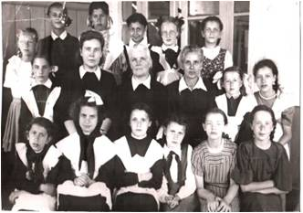
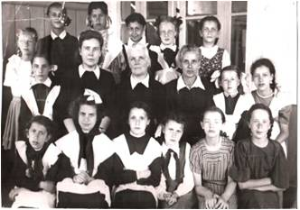

Этапы истории школы
- I период – 1935-1941 годы Первого сентября 1935 года первые ученики вошли в новые светлые классы каменной школы № 7. Наша школа действительно стала первой каменной школой, её так и называли «Каменная», в отличие от остальных деревянных школ.По воспоминаниям ветеранов, краска на полах еще недостаточно просохла, и ребятишки в первый день буквально вынесли эту краску на своих ботинках. Впервые годы учиться было непросто: не хватало тетрадей, наглядных пособий, учебников. Нередко на весь класс приходилось по 4 учебника, ими пользовались по очереди. Но, по воспоминаниям учеников тех лет, в это трудное время не было случая, чтобы кто-то пришел неподготовленным к уроку. В музее школы сохранились фотографии тех лет, по которым мы можем представить, какой была школа в 30-х годах. Просторные классы со свежевыбеленными стенами и потолком обставлены очень скромно: традиционные парты с наклонными столешницами, учительский стол, школьная доска на ножках, шкаф для учебных пособий. В начальных классах – большие счеты. Везде на партах стоят чернильницы – современные дети и не знают, что это такое. У школьников 30-х годов единой формы не было, зато учителя чаще всего ходили в строгих костюмах или темных платьях. В нашем музее есть фотография, где мы видим, как проходит урок математики в 1 «В» классе. Урок ведет Бородина Антонина Семеновна, ставшая завучем школы. 27.12 1936 года Антонина Семеновна была арестована и осуждена, как враг народа с мерой наказания 5 лет исправительно-трудовых лагерей. Первым директором школы № 7 была назначена Антонина Васильевна Цыкина, строго требовавшая от учителей соблюдения трудовой дисциплины. В эпоху первых пятилеток за опоздание на 1-2 минуты наказывались и рабочие УВЗ, и учителя школы. А с музейных фотографий на нас смотрят смешливые, любопытные, удивленные и озорные лица мальчишек с наголо побритыми головами и девчонок с короткими стрижками – это дети предвоенной поры.
Учителя, работающие в это время: Бородина Антонина Семеновна (завуч), К.Н. Покровская, К.И. Борейшо, Е.А. Рязановская, Лебедева (учителя русского языка и литературы)
- II период – 1941-1945 годы Великая Отечественная война изменила жизнь школы. На фронт ушли педагоги школы № 7 На УВЗ эвакуируются предприятия из центра страны, увеличивается количество людей живущих на Вагонке, увеличивается количество учеников в школе. С 15 августа вводятся карточки на хлеб, а с ноября – на другие продукты. В 1942 году из-за того, что в некоторых школах города были размещены госпитали, в школе № 7 увеличилось количество классов. Седьмая школа приняла на свою территорию всех, кто в ней нуждался: сюда перешли ученики и учителя школы № 8 (современная школа № 9) и вечерняя школа № 2. В этот период школа работала в три смены. Жили впроголодь, но учеба не прекращалась, каждый год все классы с 4-го по 10 сдавали экзамены по всем предметам. Хотя в школе была своя котельная, в классах было все-таки холодно, так как не хватало топлива. Чтобы заработать уголь для школы, ученики с учителями, когда днем, а когда и ночью разгружали вагоны с углем и сами перевозили его на школьный двор. С мая по сентябрь ученики и учителя трудились на колхозных полях, в заводских подсобных хозяйствах. Многие старшие школьники были мобилизованы на работу на УВЗ. Оставшиеся в школе ученики организуют тимуровское движение «Все для фронта, все для победы!». .
Учителя, работающие в это время: И.А. Касс (учитель математики), А.В. Силин (учитель истории), Анастасия Никифоровна Краюхина, Анна Ивановна Архирейская, Елизавета Петровна Сапожникова, Татьяна Павловна Мищенко, Жанна МироновнаБурнашова, Екатерина Александровна Виниченко, Иван Леонтьевич Братилов(завуч,учитель истории)
 

- III период – 1945-1983 годы В послевоенные годы школа № 7 была женской - в ней обучались только девочки, которые должны были кроме основных школьныхпредметов усвоить такие качества как доброта, женственность, культура поведения. В этот период седьмая школа дружила со школой № 9, где учились одни мальчики. Проводились совместные сборы и вечера. В конце 40-х годов в школе появилась единая форма: девочки ходили в коричневых платьях с белыми воротничками и в черных фартуках, по праздничным дням поверх платья надевался белый фартук. В конце 50-х из женской седьмая школа вновь превратилась в общую.
В послевоенные годы в школе назрела необходимость в спортзале, строительство которого не было предусмотрено сметой. В 1960 году по предложению директора школы К.И. Борейшо на собрании педагогического коллектива и родительского комитета было принято решение построить спортивный зал собственными силами методом народной стройки. В работе принимали участие шефы с УВЗ, родители, учителя и ученики. Это была действительно народная стройка. Фотоснимки из школьного музея показывают, как вручную перетаскивались кирпичи, цемент и другие стройматериалы по лесам—наверх. Когда спортзал был построен, состоялось веселое новоселье. В новом зале состоялся концерт для строителей, родителей и учителей. В 1961 году директором школы стал Яков Антонович Хилькевич, бывший фронтовик, депутат горсовета, заведующий районо в 1953-1956 годах. Будучи на посту директора 22 года, Я.А. Хилькевич много сделал для нашей школы. В этот период седьмая школа была всегда на слуху как одна из лучших школ. Учащиеся школы № 7 занимали первые места в «Зарнице» и «Орленке», принимали активное участие в сборе урожая картофеля в Пригородном районе, дружили с шефами Уралвагонзавода, где учеников школы № 7 принимали в пионеры, ходили в походы и, конечно же, учились.Школьники мечтали стать космонавтами, артистами, врачами, учителями.